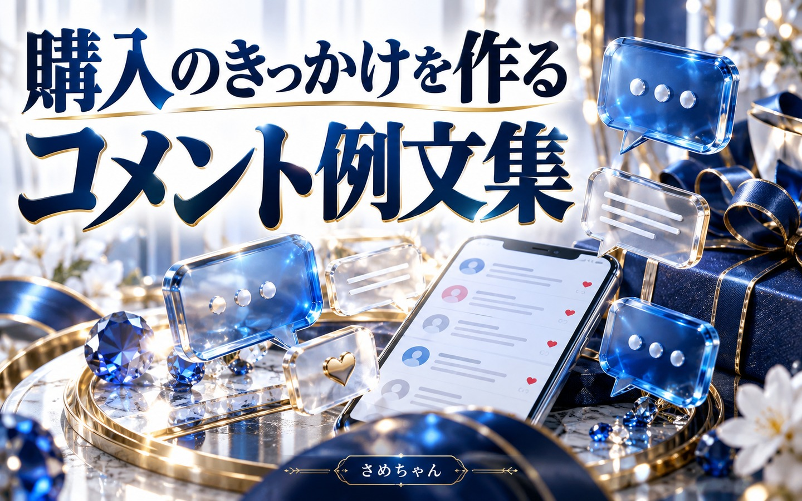

GUIDE 01
出品の時短ワザ5選
入力・採寸・撮影・発送準備の手間を減らす。スマホと手元の道具で始める、続けやすい出品の仕組み。
読む →SAMECHAN / GIFT LIBRARY · NEW GUIDES
今回の8つの特典をまとめました。各ページで内容を確認でき、PDFも保存できます。
確認用ページです。特典一覧への追加は内容確定後に行います。
GUIDE 01
入力・採寸・撮影・発送準備の手間を減らす。スマホと手元の道具で始める、続けやすい出品の仕組み。
読む →GUIDE 02
家にある物から候補を探す一覧。売れるかだけでなく、確認する状態と手元に残るお金まで考えます。
読む →
GUIDE 03
安いから買う前に。ダイソーなどの商品を題材に、購入条件・相場・送料・数量を確認する判断ガイド。
読む →
GUIDE 04
値下げ・写真追加・まとめ買いの案内を、短く伝える。相手を急かさず、検討に必要な情報を届ける例文集。
読む →
GUIDE 05
写真・説明・価格・対応を順番にチェック。順位や裏ワザに頼らず、自分の商品に合う改善を見つける実践ガイド。
読む →
GUIDE 06
発送・数量・期間・まとめ買い・安心材料。具体的な言い回しで、買う人が判断しやすい説明に整えます。
読む →
GUIDE 07
品名・状態・仕様・発送条件を、正確に伝える言葉の辞典。使う条件とセットで選べます。
読む →
GUIDE 08
短い例文を組み合わせて、分かりやすい商品説明に。衣類・機器・状態・梱包など、場面別に探せます。
読む →